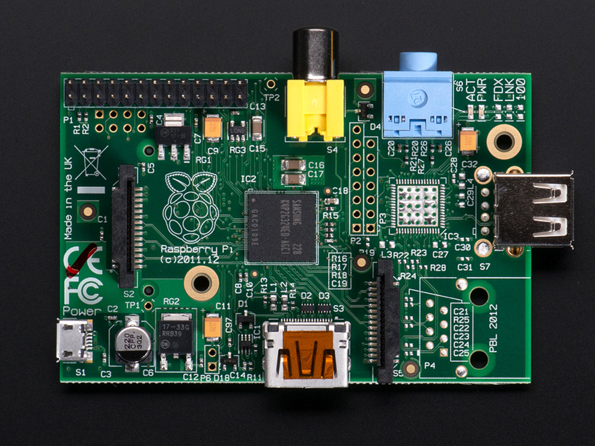
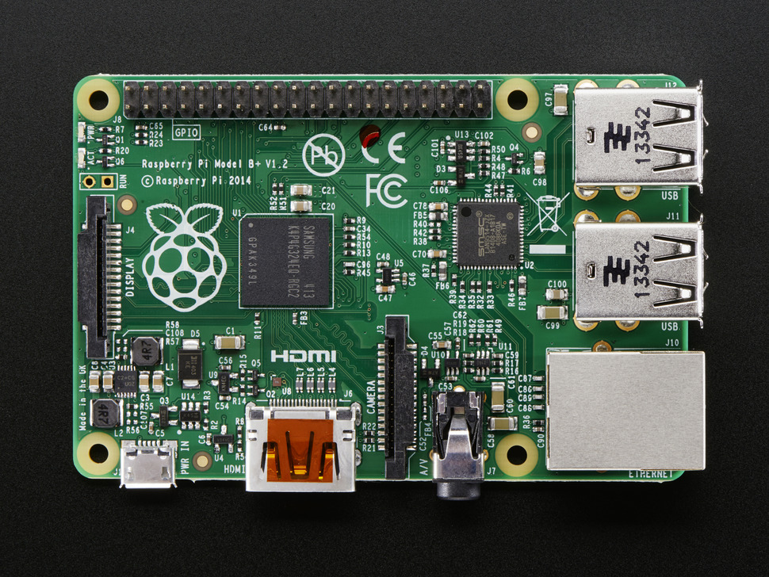
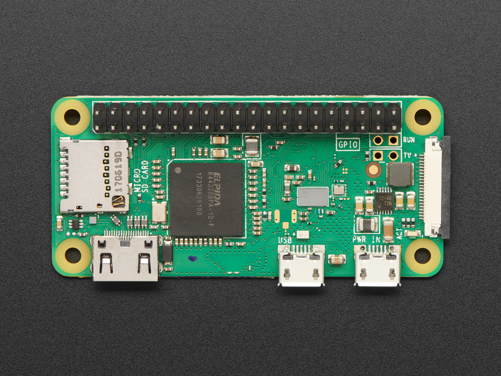

Les differents modèles
Modèle B
- Année de sortie: 2012
- Prix: 35 USD
- processeur: BMC2835 700MHZ simple coeur
- RAM: 512MB
- Ports USB: 2
- Interface Réseau: 10/100 Mbit/s Ethernet
- Type de carte SD: SD
- Taille: 8.6cm x 5.7cm
- Disponible? Plus disponible
Modèle A

- Année de sortie: 2013
- Prix: 25 USD
- processeur: BMC2835 700MHZ simple coeur
- RAM: 256MB
- Ports USB: 1
- Interface Réseau: Pas d'interface réseau
- Type de carte SD: SD
- Taille: 8.6cm x 5.7cm
- Disponible? Plus disponible
Modèle B+

- Année de sortie: 2014
- Prix: 25 USD
- processeur: BMC2835 700MHZ simple coeur
- RAM: 512MB
- Ports USB: 4
- Interface Réseau: 10/100 Mbit/s Ethernet
- Type de carte SD: Micro SD
- Taille: 8.6cm x 5.7cm
- Disponible? Plus disponible sur Adafruit.
Modèle A+
- Année de sortie: 2014
- Prix: 20 USD
- processeur: BMC2835 700MHZ simple coeur
- RAM: 512MB
- Ports USB: 1
- Interface Réseau: 10/100 Mbit/s Ethernet
- Type de carte SD: SD
- Taille: 6.5cm x 5.7cm
- Disponible? Plus disponible
Modèle 2

- Année de sortie: 2015
- Prix: 35 USD
- processeur: BMC2836 900MHZ quadricoeur
- RAM: 1 GB
- Ports USB: 4
- Interface Réseau: 10/100 Mbit/s Ethernet
- Type de carte SD: Micro SD
- Taille: 8.6cm x 5.7cm
- Disponible? Plus disponible
Modèle zero

- Année de sortie: 2015
- Prix: 5 USD
- processeur: BMC2835 1GHZ simple coeur
- RAM: 512MB
- Ports USB: 1 Micro-USB
- Interface Réseau: Pas d'interface réseau
- Type de carte SD: Micro SD
- Taille: 8.6cm x 5.7cm
- Disponible? Disponible sur Adafruit.
Modèle 3
- Année de sortie: 2016
- Prix: 35 USD
- processeur: BMC2837 1.2GHZ quadricoeur
- RAM: 1GB
- Ports USB: 4
- Interface Réseau: 10/100 Mbit/s Ethernet, Wifi 802.11n, Bluetooth 4.1
- Type de carte SD: SD
- Taille: 6.8cm x 3.1cm
- Disponible? Plus disponible
Modèle Zero WH
- Année de sortie: 2018
- Prix: 15 USD
- processeur: BMC2835 1 GHZ simple coeur
- RAM: 512MB
- Ports USB: 1 Micro-USB
- Interface Réseau: Wifi 802.11n, Bluetooth 4.1
- Type de carte SD: SD
- Taille: 6.5 cm x 3cm
- Disponible? Disponible sur Adafruit.